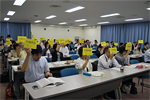

埼玉県生協連 第43回通常総会を開催しました
6月19日、さいたま市浦和区の埼玉会館で埼玉県生協連第43回通常総会を開催しました。
総会には、総会代議員41名（内書面出席9名）が出席し、2013年度事業報告、決算、2014年度事業計画、予算など5件の議案が賛成多数で可決されました。
冒頭、滝澤玲子常務理事の司会で開会し、吉田駒子代議員(コープみらい)と青柳則子代議員(パルシステム埼玉)を議長に選出、続いて総会役員を選出しました。
来賓として埼玉県県民生活部消費生活課 課長竹中健司様、JA埼玉県中央会 常務理事 矢作俊信様、埼玉県地域婦人会連合会 会長 柿沼トミ子様よりご挨拶をいただきました。
議事に入り、岩岡宏保会長理事より、2013年度まとめ、2014年度計画、予算など、第1号議案から第5号議案まで一括提案され、久慈美知子監事より監査報告が行われました。
議案提案後の議案討議では、4名の代議員から発言がありました。コープみらいの齋藤尚子代議員から「豊かな地域社会の実現をめざして」、パルシステム埼玉の小山三恵子代議員から「パルシステム埼玉で進める福祉の取り組みについて」、医療生協さいたまの磯﨑悦子代議員から「行政とのつながりを意識した地区制の変更」、埼玉県労働者共済生協の宇野澤 慎一代議員から「埼玉労済創立50周年を迎えるにあたって」のテーマでそれぞれ発言されました。
代議員の発言を受け、岩岡会長理事より議案討議のまとめを行い、第1号から第5号議案の採決に移り、いずれの議案も、賛成多数で承認されました。
議題
- ■第1号議案
- 2013年度事業報告、決算報告、剰余金処分案決定の件
監査報告
- ■第2号議案
- 2014年度事業計画、予算決定の件
- ■第3号議案
- 2014年度役員報酬額決定の件
- ■第4号議案
- 役員補充の選任の件
- ■第5号議案
- 議案決議効力発生の件
尚、今総会では、役員の退任に伴う補充選出をおこない、新しく理事に以下の二名が選任されました。
理事 大木島 誠（埼玉大学生活協同組合専務理事）
理事 小山 道明紀（跡見学園女子大学生活協同組合専務理事）
■議案採決結果はこちらをご覧ください【PDF：111KB】
| 埼玉県県民生活部 竹中 様 |
JA埼玉県中央会 矢作 様 |
埼玉県地域婦人会連合会 柿沼 様 |
| 岩岡会長理事の議案提案 | コープみらい 齋藤代議員 |
パルシステム埼玉 小山代議員 |
|  | ||
| 医療生協さいたま 磯﨑代議員 |
埼玉県労働者共済生協 宇野澤代議員 |
議案採決 |